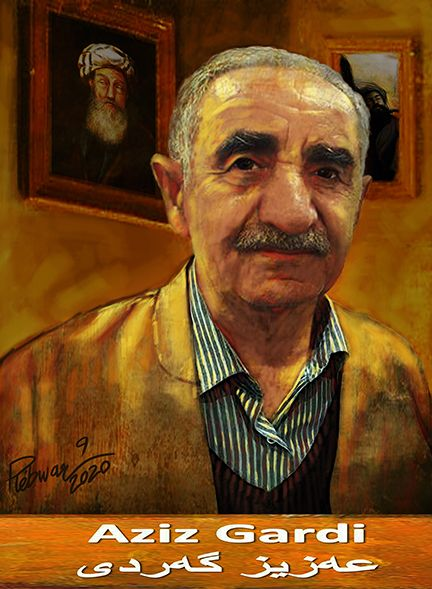

<html>
  
  <head>
  
    <!DOCTYPE html>
    <html lang="en">
    
    <head>
        <meta charset="UTF-8">
        <meta name="viewport" content="width=device-width, initial-scale=1.0">
        <title>BlueBits DropDown Menu</title>
        <link rel="stylesheet" href="style.css">
    </head>
    
    
            <nav>
                </div> 
                <div class="lang-menu">
                    <div class="selected-lang">
                        English
                    </div>
                    <ul>
                        <li>
                            <a href="#" class="de">turkish</a>
                        </li>
                        <li>
                            <a href="" class="en">English</a>
                        </li>
                        <li>
                            <a href="" class="fr">kurdish</a>
                        </li>
                        <li>
                            <a href="" class="ar">Arabic</a>
                        </li>
                    </ul>
    
                </div>
            </nav>
        </header>
    
    </body>
    
    </html> 
   
  
  <head>
  
  
  <title>Aziz Gardi</title>
  <style>
  
  h1 {
  color: red;
  }
  body{
  background-color: yellow;
 
  }
  
  h1, h2 {
  border-bottom: 1px solid black;
  }
  
  
  
  body {
    font-family: 'Amiri';
    font-size: 27px;
    text-align: right;
}
  
</style>  
  
  
  <body>
<p>  Welcome to website this a website about is Aziz Gardi
<body>
<p>  Welcome to my website make website	Danyar Mzafar Jalal </p>
<h1>about Aziz gardi</h1>
 <div id="xdr"></div> 
 <a href="#haji">ناساندن </a> 


  <br>
 ناساندن 
  
  نووسەر و وەرگێڕێکی کوردە. زۆر شاکاری  نووسەر و وەرگێڕێکی کوردە. زۆر شاکاری جیهانی بۆ سەر زمانی کوردیی ناوەندی وەرگێڕاوە. ساڵی ١٩٤٧ لە بەحرکەی هەولێر لەدایکبووە، گەردی دەرچووی بەشی زمانی فەڕەنسی بوو لە زانکۆی بەغدا، دواتر لە ساڵانی ١٩٩٤ و ١٩٩٩ بڕوانامەکانی ماستەر و دکتۆرای بەدەستهێنا. ڕۆژی ٦ـی حوزەیرانی ٢٠٢٢ لە شاری هەولێر کۆچی دوایی کرد.
<br>
<br>
<br>
ژیان نامە
<br>


عەزیز ئەحمەد عەبدوڵڵا، ناسراو بە عەزیز گەردی، لە ساڵی ١٩٤٧ لە هەولێر لەدایکبووە، لە ناحیەی بەحرکەی نزیک شاری هەولێر دەژیا، تاوەکوو ساتی کۆچی دواییشی هاوسەرگیریی نەکردووە. هەر لە منداڵییەوە خولیای خوێندنەوە دەبێت و لە هەرزەکاریدا دەست بە خوێندنەوەی ئەدەبیاتی کوردی و بیانی دەکات، کتێبی زانستەکانی ڕەوانبێژی و عەرووز دەخوێنێتەوە و لای خۆیشی هێدی هێدی یاداشتیان دەکات، وەکو خۆی گوتوویەتی: "لەگەڵ خوێندنەوەی هەر کتێبێکدا، تێبینی و سەرقەڵەمی تایبەتیم دەنووسییەوە، تا وای لێهات چەند دەفتەرێکم پڕ کردەوە". نۆبەرەی بەرهەمەکانی عەزیز گەردی ساڵی ١٩٦٨-١٩٦٩ چاپ و بڵاوکراوەتەوە کە کتێبی ڕەوانبێژییە، بەڵام ئەو کتێبەی لە سەرەتای حەفتاکان چاپ و بڵاودەکاتەوە. دواتر کتێبەکانی ئەدەبی بەراوردکاری، پەخشانی کوردی، ڕابەری شیعری کلاسیکی کوردی و چەندین کتێبی تر دەنووسێت. لە ساڵی ١٩٩٤ ماستەرنامە و لە ساڵی ١٩٩٩ بڕوانامەی دکتۆرا بەدەستدەهێنێت کە تێزەکەی بە ناونیشانی (سەروا)یە، دەزگای ئاراس هەمان ساڵ چاپ و بڵاوی دەکاتەوە. عەزیز گەردی لە چەندین قوتابخانە وانەی گوتووەتەوە و پاشان دوای تەواوکردنی زانکۆ لە کۆلێژی ئاداب، بەشی زمانی کوردی دەبێتە مامۆستا، خۆی لەبەر نەپڕژان بەسەر کاری وەرگێڕاندا دەستلەکاردەکێشێتەوە و بەیەکجاری تەنیایی هەڵدەبژێرێت، خانوویەک لە شارەدێی بەحرکە دەکاتە شوێنی ژیان و نووسینەکانی و بژێویشی لەسەر مووچەی خانەنشینییەکەیەتی. عەزیز گەردی، لەگەڵ ئەوەی کوردیزانێکی کەموێنە بووە و شێوەزارەکانی کورمانجی سەروو، کورمانجی خواروو لەگەڵ هەورامی زانیووە، چوار زمانی جیهانیشی بەباشی زانیووە. بەشی زمانی فەڕەنسی لە زانکۆی بەغدا خوێندووە، زمانەکانی ئینگلیزی، عەرەبی و فارسیشی بەباشی زانیووە.

<br>
<br>
بەرهەمەکان
<br>
<br>

رەوانبێژی لە ئەدەبی کوردی دا، هەولێر، ١٩٧٢.
ئەدەب و ڕەخنە، بەغداد، ١٩٧٤.
ئەدەبی بێگانان، بەغداد، ١٩٨٢.
جوتیارێکی زیرەک.
پیاوێک
سەروا، هەولێر، ١٩٩٩.
کێشی شیعری کلاسیکیی کوردی، هەولێر: وەزارەتی ڕۆشەنبیری، ١٩٩٩.
رەوانبێژی (روونبێژی، جوانکاری، واەاناسی)، وەزارەتی پەروەردە، ٢٠٠٢.
رابەری کێشی شیعری کلاسیکی لێکۆڵینەوەی ئەدەبی، سلێمانی، ٢٠٠٣.
گەردەلولی مەرگ، هەولێر، ٢٠٠٨.
کێشناسیی کوردی، ٢٠١٤.
سێ دەرمان: هەقایەتی کوردەواری، کۆکردنەوەی عەزیز گەردی.


